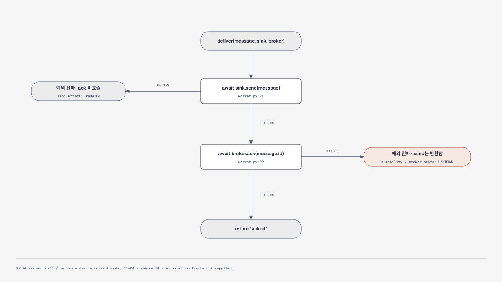

C1 · 사실
deliver는 send 반환 → ack 반환 → "acked" 반환 순서로 실행한다.
await 순서로 확인. 외부 구현의 의미까지 확인한 것은 아니다.
출처: S1
send가 정상 반환한 뒤에만 ack를 호출합니다. send 예외와 ack 예외는 서로 다른 실행 상태이며, 예외나 반환값만으로 외부 효과의 영속성·중복 여부까지 보장할 수 없습니다.
읽은 범위는 worker.py 23줄 전체와 fake 테스트입니다. 정상 반환은 coroutine이 예외 없이 끝났다는 뜻입니다. 영속 저장·무중복 전달·broker 재배달은 별도 계약입니다. 함수 이름에서 추측한 의도와 실제 statement 순서를 구분합니다.
| 조건 | 현재 제어 흐름 | 외부 상태 해석 |
|---|---|---|
| 정상 | send 반환 → ack 반환 → "acked" | 각 구현이 정상 반환에 약속한 효과만 의미. 내구성 미확인 |
| send 예외 | ack 미호출, 예외 전파 | 효과 전 실패 또는 효과 적용 후 응답 실패 모두 가능 |
| ack 예외 | send 반환 후 ack 호출, 예외 전파 | sink 효과가 남을 수 있음. ack 적용 여부도 미확인 |
| caller가 전체 retry | send부터 다시 실행 | sink 중복 제거가 없다면 같은 message 효과 반복 가능 |
| await 중 취소·process 종료 | 완료된 앞 단계의 rollback 코드 없음 | 외부 효과가 어느 지점까지 적용됐는지 별도 확인 필요 |

원본 deliver를 fake sink/broker로 실행해 정상 반환, send 실패 시 ack 미호출, ack 실패 전 send 실행을 확인했습니다. 첫 ack 실패 뒤 caller가 전체 함수를 다시 호출한 fake에서는 같은 ID가 sink list에 두 번 기록됐습니다. 외부 service 장애 실험은 아닙니다.
추가 독립 적용에서는 send/ack 효과 전·후 실패를 나누어 6개 시나리오를 실행했습니다. send 예외도 효과 부재를 뜻하지 않고 ack 예외도 이미 적용된 뒤의 응답 실패일 수 있다는 범위를 확인했습니다. 재현 코드와 trace는 evals/independent/에 보존합니다.
중복이 결제·메일처럼 비용을 만들면 중요하지만, 현재 자료로 발생 빈도나 운영 위험 등급을 추정할 수 없습니다. broker가 자동 재배달한다는 결론도 이 파일만으로는 내릴 수 없습니다.
| 시점 | 행동 | 확인 방법 |
|---|---|---|
| 단기 | send/ack 구현·caller retry·message ID별 trace 확인 | 실패 시점과 외부 상태 조회 대조 |
| 중기 | idempotency key·timeout·취소·동시 retry 계약 정의 | 효과 후 응답 실패·동일 ID 병렬 입력 테스트 |
| 장기 | 보장 요구에 맞춰 transaction/inbox/outbox 대안 비교 | 실제 저장소와 장애 복구 integration 검증 |
구조: assemble --check와 package validator. 근거·의미: 코드 정적 추적, fake 동작 테스트, 독립 적용. 시각: diagram-design self_check/verify_geometry 및 실제 PNG 검토. 자세한 명령·관찰·수정은 evals/report.md. 실제 sink/broker 내구성·장애 빈도·production 배포는 미검증입니다.
deliver는 send 반환 → ack 반환 → "acked" 반환 순서로 실행한다.
await 순서로 확인. 외부 구현의 의미까지 확인한 것은 아니다.
출처: S1
send가 예외를 내면 ack를 호출하지 않고 예외가 caller로 전파된다.
이 함수에 except나 retry가 없다. send 자체의 외부 효과는 미확인.
출처: S1, S2
ack가 예외를 내면 앞의 send는 이미 반환했으며 함수는 예외로 끝난다.
ack도 적용 후 응답 실패일 수 있어 실제 ack 상태는 외부 계약/조회 필요.
출처: S1, S2
전체 deliver 재시도는 send를 반복하므로 중복 효과가 가능하다.
fake 실행에서 같은 ID 기록 2개를 관측했다. 실제 중복은 caller retry·sink deduplication에 달려 있다.
출처: S1, S2
sink 내구성, broker 재배달·보존 정책, caller retry는 제공되지 않았다.
Protocol에는 async 호출 signature만 존재하고 구체 구현·배포 설정·호출자는 없다.
출처: 없음
message ID별 시도·효과를 관측하고 idempotency 계약을 확인하는 것이 우선이다.
외부 구현을 확인한 뒤 중복 허용 여부·재시도 범위를 정한다.
출처: S1